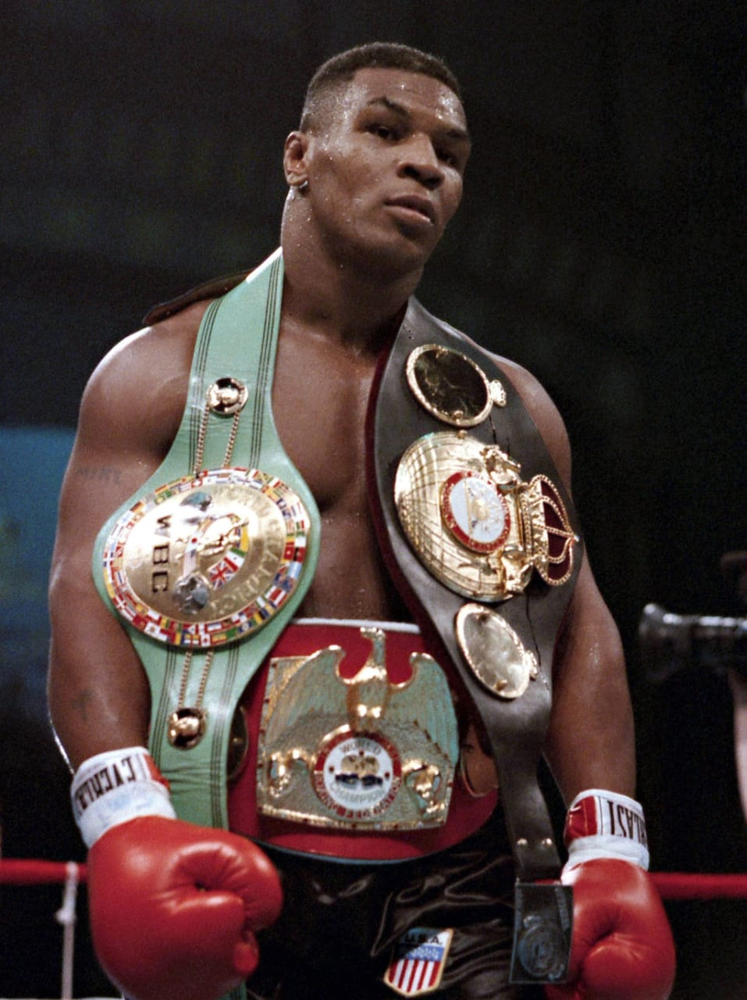

Mike Tyson
Michael Gerard Tyson (born June 30, 1966) is an American former professional boxer who competed from 1985 to 2005. Nicknamed "Iron Mike" and "Kid Dynamite" in his early career, and later known as "the Baddest Man on the Planet", Tyson is regarded as one of the greatest heavyweight boxers of all time. He reigned as the undisputed world heavyweight champion from 1987 to 1990. Tyson won his first 19 professional fights by knockout, 12 of them in the first round. Claiming his first belt at 20 years, 4 months, and 22 days old, Tyson holds the record as the youngest boxer ever to win a heavyweight title. He was the first heavyweight boxer to simultaneously hold the WBA, WBC and IBF titles, as well as the only heavyweight to unify them in succession.